Tutorial 1: Classifying Lithology Types in the Ladakh Region Using Kalpa#
Tutorial by
Utpal Singh¹, Satyam Pratap Singh¹ , Sudipta Sarkar²
¹ School of Geosciences, University of Sydney
² Department of Earth and Climate Sciences, Indian Institute of Science Education and Research Pune
This tutorial demonstrates how to classify lithology types in the Ladakh region using Kalpa. We will employ a supervised machine learning method, Random Forest, to train a model using satellite data and known lithology types. Once trained, this model will be used to predict lithology across the entire region.
Dataset Overview#
For this classification task, we use:
LANDSAT8 Bands: Multispectral bands (1 to 8) as NetCDF files.
SRTM Elevation Data: Elevation values from the Shuttle Radar Topography Mission (SRTM).
Accessing the Dataset The tutorial dataset is available [provide link here].
Workflow#
Step 1: Load Raster Files#
Start by loading the required raster datasets:
All LANDSAT8 bands (Band 1 to Band 8).
SRTM Elevation data.
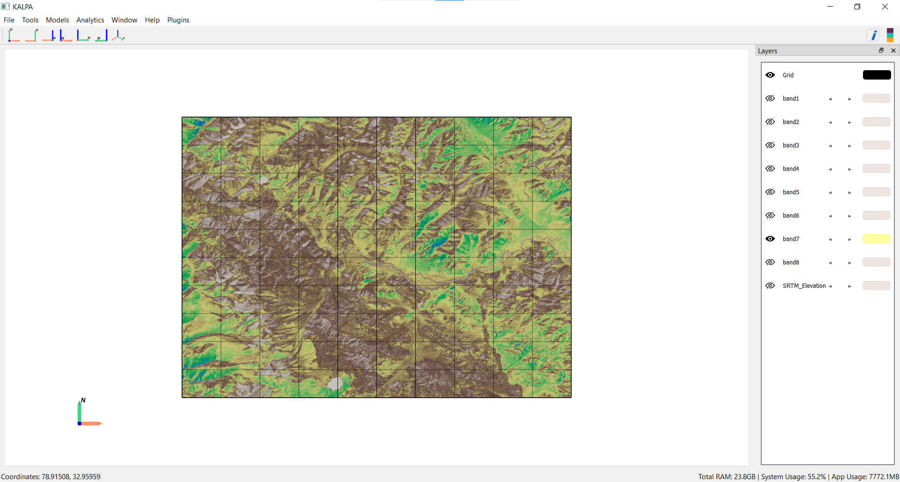
Step 2: Load and Merge Label Files#
Next, load the shapefiles containing known lithology types. These shapefiles represent 17 lithology classes, stored in the CLASS_NAME column:
Alluvium
Chert Jasper Metasediments
Dunite
Fluvial Channel
Gabbro
Ice
Indus Formation
Kargil Formation
Ladakh Plutonic Complex
Lake
Lian
Pyroxenite
Serpentinized Peridotite
Tso Morari Complex
Volcanics
Water
Zildat Ophiolite Melange
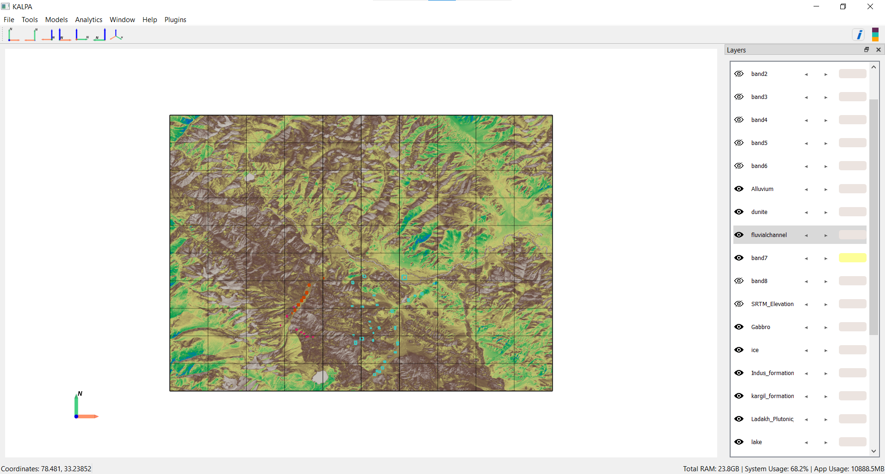
Merge these shapefiles into a single GeoPackage file named All_Classes.gpkg using the “Merge Vector” functionality in Kalpa.
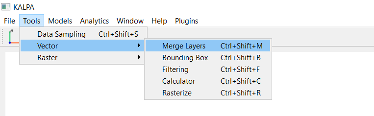
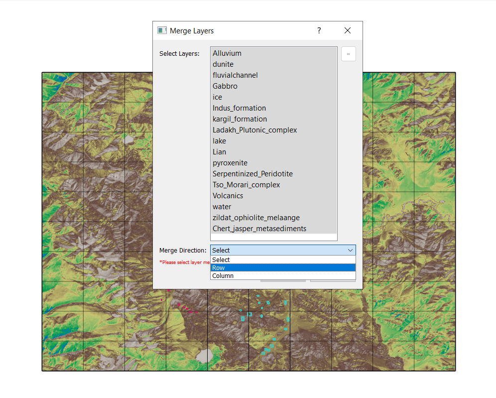
These datasets are written in Row format, for a different dataset written columnwise, use column.
After merging the data you may remove the individual layers classes since all are merged in all_classes.gpkg.
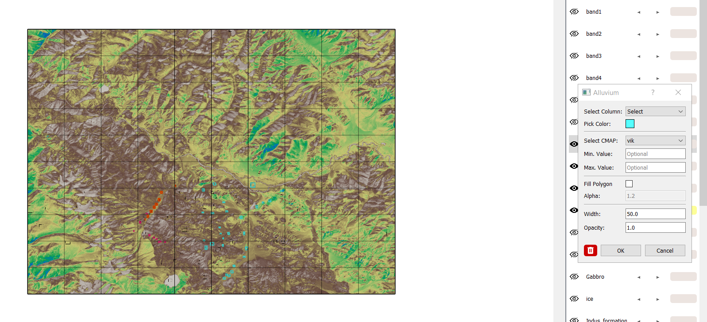
Step 3: Sample Training Data#
Randomly sample the raster data (LANDSAT8 bands, SRTM Elevation) and lithology classes (CLASS_NAME) to create a training dataset:
Navigate to Tools → Data Sampling.
Select 100,000 data points.
Save the resulting file as training_dataset.gpkg.
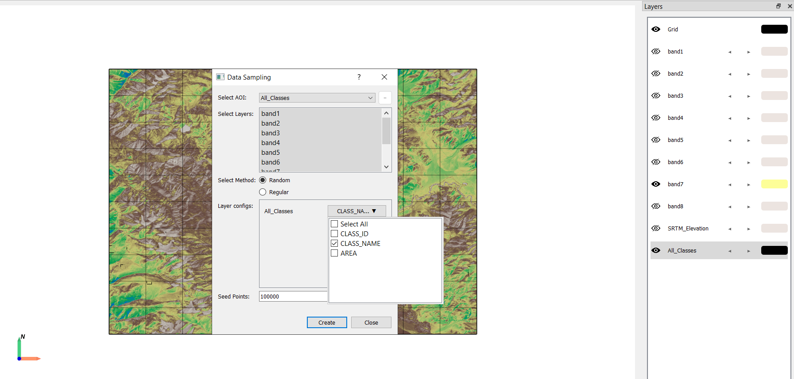
Hit create, this may take few time depending on system specifications. Save the dataset as training_dataset.gpkg.
Step 4: Build a Random Forest Classifier#
What is Random Forest?#
Random Forest is an ensemble learning method that constructs multiple decision trees during training and outputs the mode of the classes for classification tasks. It is robust, handles high-dimensional data well, and is resistant to overfitting.
Key Parameters:#
n_estimators: Number of trees in the forest (e.g., 100).
criterion: Function to measure split quality (e.g., “gini” for Gini impurity).
max_depth: Maximum depth of a tree (None allows full growth).
min_samples_split: Minimum samples required to split a node.
min_samples_leaf: Minimum samples required at a leaf node.
max_features: Number of features to consider for the best split (e.g., “sqrt”).
bootstrap: Whether bootstrap samples are used to build trees (True/False).
Training the Model:#
Navigate to Models → Supervised → Random Forest Classifier → Create New Model.
Load training_dataset.gpkg.
Set the training features (Band1 to Band8, SRTM Elevation).
Set the target feature (CLASS_NAME).
Configure the Random Forest parameters as needed.
Train the model and save it for future use.
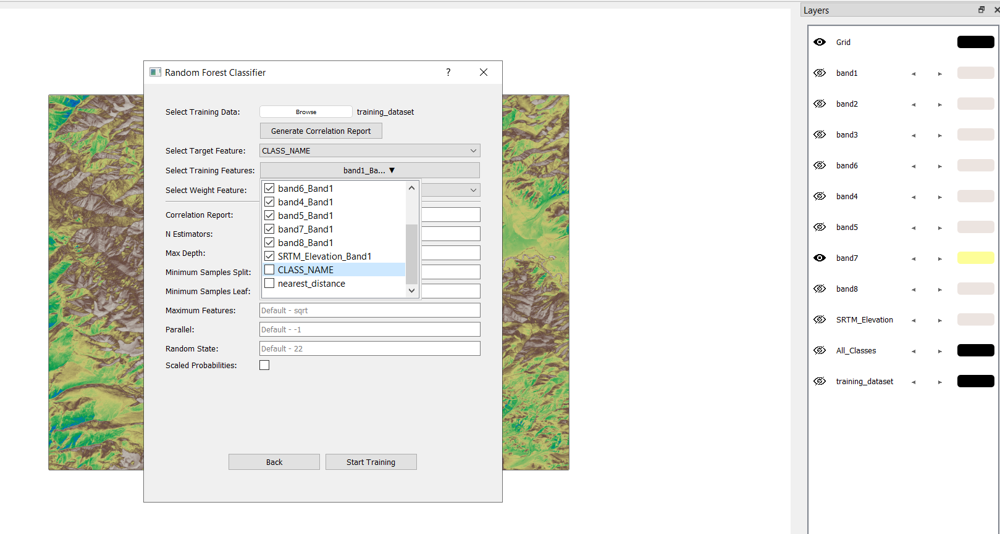
Hit start training after chosing your parameters. For simplicity in this tutorial we are proceeding with default values.
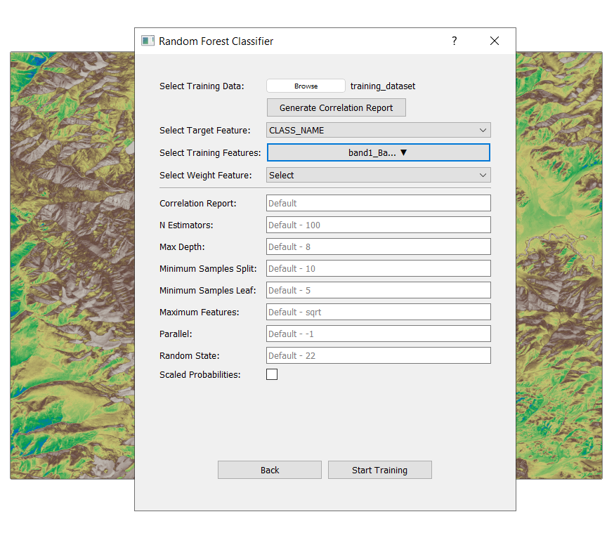
After training, save model as RF_model. This will create a folder named RF Classifier Models in the project directory.
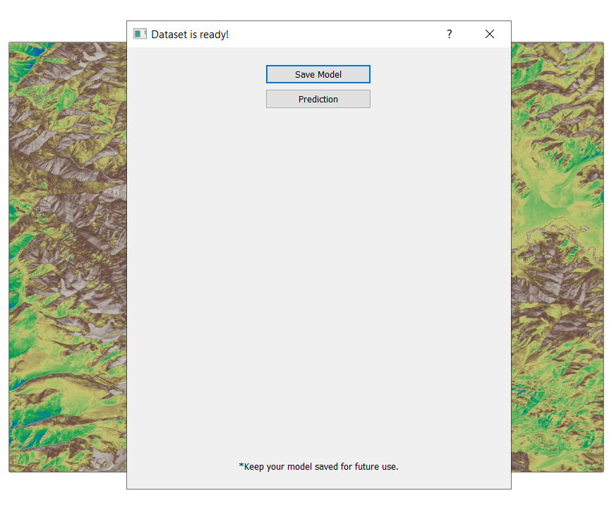
Step 5: Predict Lithology for the Entire Region#
Step 5.1: Prepare the Prediction Dataset#
Define the area of interest/region of interest using a bounding box or a shapefile. For this tutorial, we are training for the entire region, so we make the shapefile/ROI for the entire region.
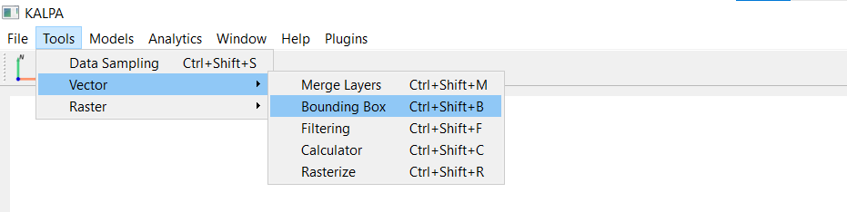
You may chose any of the bands to extract the region in this tutorial, since they all represent the same region.
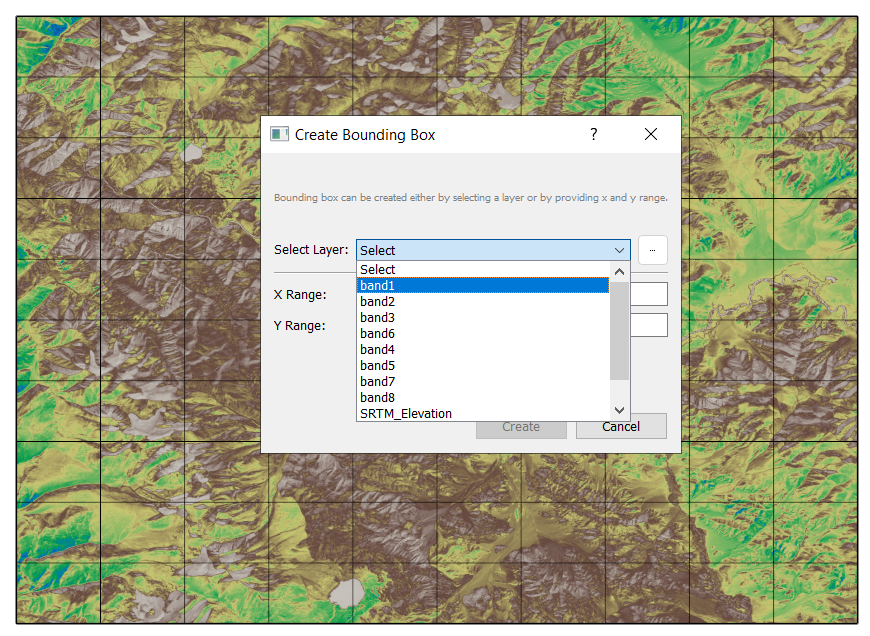
Click create after chosing the band and save as bounding_box.gpkg.
Sample raster data at regular grid intervals. Exclude picking any classes since it will be predicted later using ML models. Select AOI as bounding_box which was produced earlier. Define resolution you want in degrees, not in m or km. For eg. 0.05 degree is approx 0.001km or 10m
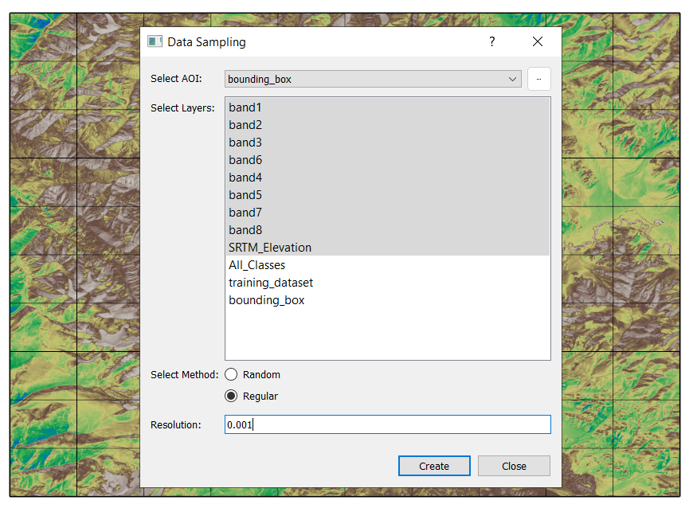
Hit create. This will take a few moment, and save the sampled dataset as predition_dataset.gpkg.
Save the sampled dataset as prediction_dataset.gpkg.
Step 5.2: Perform Prediction#
Navigate to Models → Supervised → Random Forest Classifier → Existing Model.
Load the trained model.
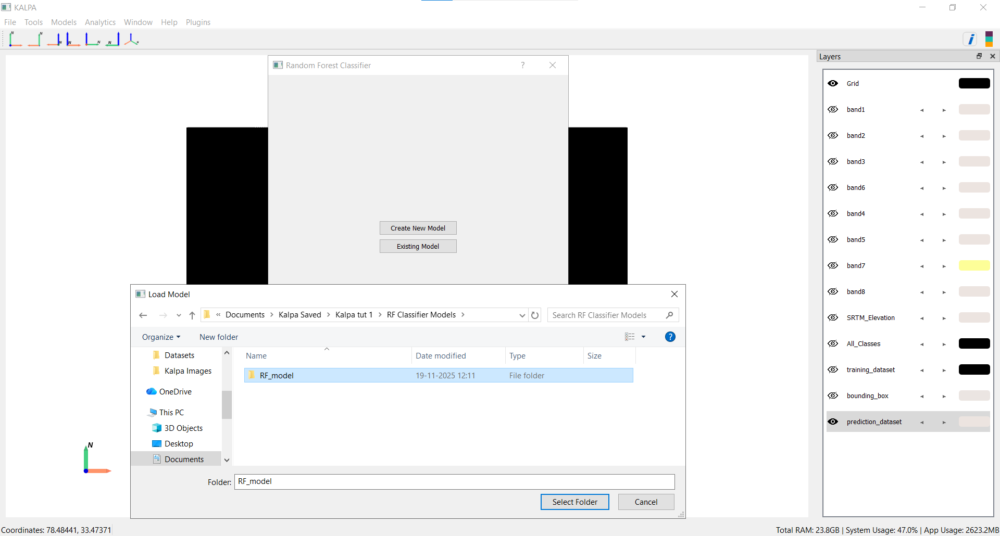
Select prediction_dataset.gpkg for prediction.
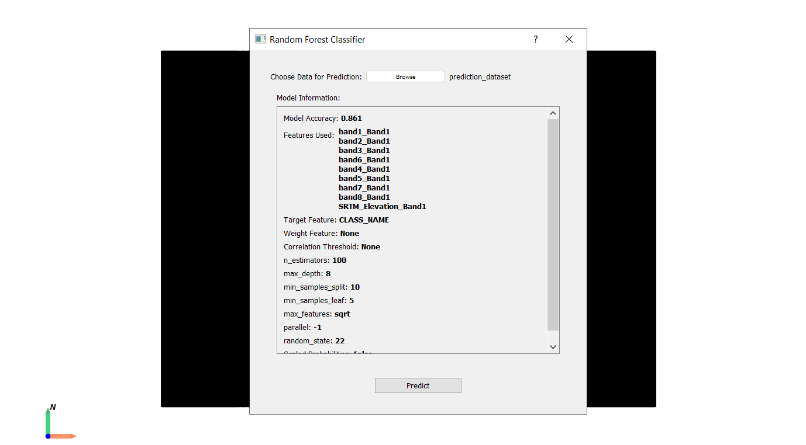
Click Predict and save as predicted_dataset.gpkg.
Save and visualize the predicted lithology layer.
Navigate to Predicted_CLASS_NAME from the predicted_dataset layer.
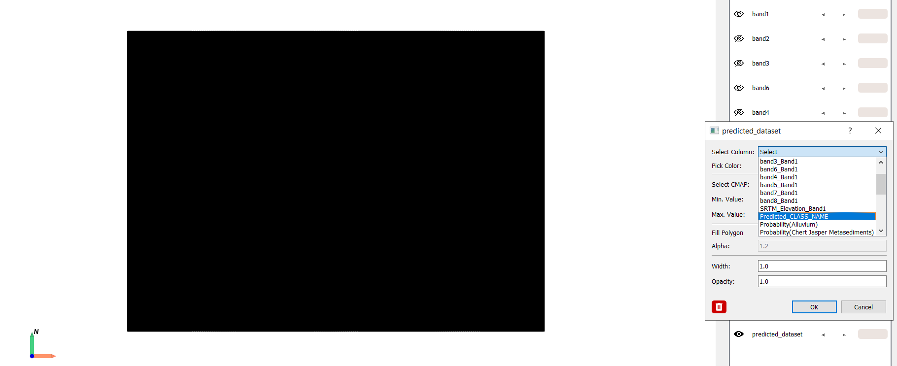
Enjoy!!!
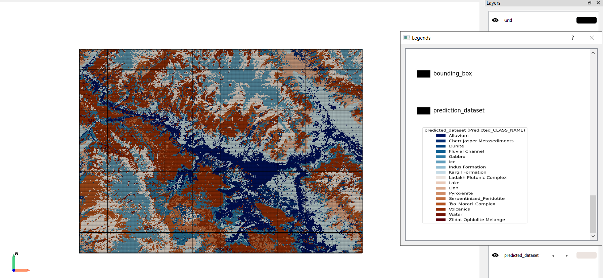